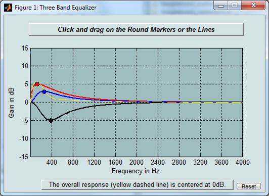

Parametric Audio Equalizer
This example shows how to use ALSA Audio Playback block from the Raspberry Pi® block library to implement a parametric audio equalizer algorithm with a Simulink® model and to run the model on Raspberry Pi hardware.
Contents
Introduction
Parametric equalizers are used to adjust the frequency response of audio systems. For example, a parametric equalizer can be used to compensate for biases with specific speakers that have peaks and dips at different frequencies.
In this example, you will implement a parametric audio equalizer with a Simulink model and then run that model on Raspberry Pi hardware. The parametric equalizer algorithm in this example provides three second-order (bi-quadratic) filters whose coefficients can be adjusted to achieve a desired frequency response. A graphical user interface (GUI) is used in simulation to dynamically adjust filter coefficients and explore behavior.
The following sections will describe how the parametric equalizer algorithm is specified, how the performance can be assessed through simulation, and how the model is run on Raspberry Pi hardware. You will also learn how the ALSA Audio Playback block is used to output audio signals.
Prerequisites
- We recommend completing Getting Started with Raspberry Pi® Hardware example.
Required Products
- DSP System Toolbox™
Required Hardware
To run this example you will need the following hardware:
- Raspberry Pi hardware
- Headphones, speakers or a TV/Monitor with HDMI input
Task 1 - Configure and Run the Parametric Equalizer Model
In this task, you will configure and run the parametric equalizer model on Raspberry Pi hardware.
1. Connect a pair of speakers or headphones to the analog audio output connector on the Raspberry Pi hardware.
2. Open the Parametric Audio Equalizer model.
3. Select Tools > Run on Target Hardware > Options.... Review the parameters on the page that opens. If you performed a Firmware Update, Board information will be automatically populated with the host name, user name and password of your Raspberry Pi hardware. If you have not performed a Firmware Update or you need to change the board parameters, enter the IP address, user name and password of your Raspberry Pi hardware.
4. In the model, make sure that the Simulation mode on the toolbar is set to External.
5. In the Simulink model, double-click on the Signal From Workspace block. The block outputs the samples of the signal called audioSignal at a rate of 44100 samples per second. The audioSignal is read from a wave file called guitartune.wav in the model InitFcn callback. To view model callbacks click on File > Model Properties > Model Properties and navigate to desired callback function in the Model Properties GUI.
6. In the Simulink model, double-click on the ALSA Audio Playback block. Note that this block sends the processed audio signal to the 'Default' audio device on the Raspberry Pi hardware. You can also enter the name of an audio device such as 'plughw:0,0' to send audio to a device other than the 'Default' audio device. To get a list of audio playback devices on your Raspberry Pi hardware, execute the following command on the MATLAB command line:
r = raspberrypi; a = listAudioDevices(r,'playback')
The output returned by the listAudioDevices function is a structure array containing the name and the device numbers of the available audio playback devices. A typical output is:
a(1)
Name: ' bcm2835 - bcm2835 ALSA...'
Device: '0,0'a(2)
Name: ' bcm2835 - bcm2835 ALSA...'
Device: '0,1'a(3)
Name: ' USB-Audio - USB PnP Sound Device...'
Device: '1,0'The output above indicates that there are three audio playback devices with ALSA audio device numbers 0,0, 0,1 and 1,0. The first two devices correspond to the analog audio output and the HDMI output of the Raspberry Pi board. The third device is a USB audio dongle. To use the playback device 0,0, enter 'plughw:0,0' for the Device name parameter on the ALSA Audio Playback block.
7. In the model, click the Run button on the toolbar to run the model on the Raspberry Pi hardware.
Task 2 - Change the Frequency Response of the Parametric Equalizer
1. As the model is running on Raspberry Pi hardware, you will hear audio from the speakers/headphones connected to the Raspberry Pi hardware.
2. A GUI displaying the frequency response of the audio equalizer will appear as shown in the picture below:

3. Click and drag the markers or lines in the Three Band Equalizer GUI to specify the desired filter response characteristics. Note the change in audio output as the frequency response of the equalizer changes.
4. Press the Stop button on the model to stop model execution.
Other Things to Try
- Change the volume of the sound sent to speakers/headphones by tuning the Gain parameter in the 'Sum left & right channels and to single* subsystem in the Simulink model.
Summary
This example showed a Simulink model of a parametric audio equalizer. Using External mode, equalizer settings were changed in real-time as the model executed on Raspberry Pi hardware.